🎓
IEMS — School Management System
Complete User Guide
Inspire English Medium School, Mardi
Tah. Maregaon, Dist. Yavatmal (Maharashtra) – 445303
First-time login → Username: admin Password: admin123
You will be asked to set your own password on the first login.
A step-by-step guide for everyday use — from logging in to entering data and printing documents.
What's in this guide
| Part 1 — Getting started | |
| 1.1 Logging in for the first time | 3 |
| 1.2 The main dashboard | 4 |
| Part 2 — Everyday tasks, step by step | |
| 2.1 Add a new student | 5 |
| 2.2 Record a fee payment & print the receipt | 7 |
| 2.3 Make a student ID card | 8 |
| 2.4 Bonafide & Leaving certificates | 9 |
| 2.5 Send any document to a phone (QR) | 10 |
| Part 3 — Every module explained | |
| 3.1 Staff & Teachers (with ID cards & payslips) | 11 |
| 3.2 Finance Management | 12 |
| 3.3 Transport Management | 12 |
| 3.4 School Documents | 13 |
| 3.5 Backup & Restore (with Google Drive) | 14 |
| 3.6 System Settings | 15 |
| 3.7 Audit Trail | 15 |
| Part 4 — Users, roles & security | |
| 4.1 User accounts & what each role can do | 16 |
| 4.2 Adding and managing users | 16 |
| 4.3 Two-factor authentication (extra security) | 17 |
| 4.4 Changing or resetting your password | 17 |
| Part 5 — Keeping your data safe | 18 |
How to read this guide: each screen has a picture, and the blue numbers
①②③ in the picture description tell you what each button or box does. Boxes marked
Step walk you through a task one action at a time.
Part 1 — Getting started
1.1 Logging in for the first time
Double-click the IEMS School Management icon on the desktop (or Start menu). The login screen appears.
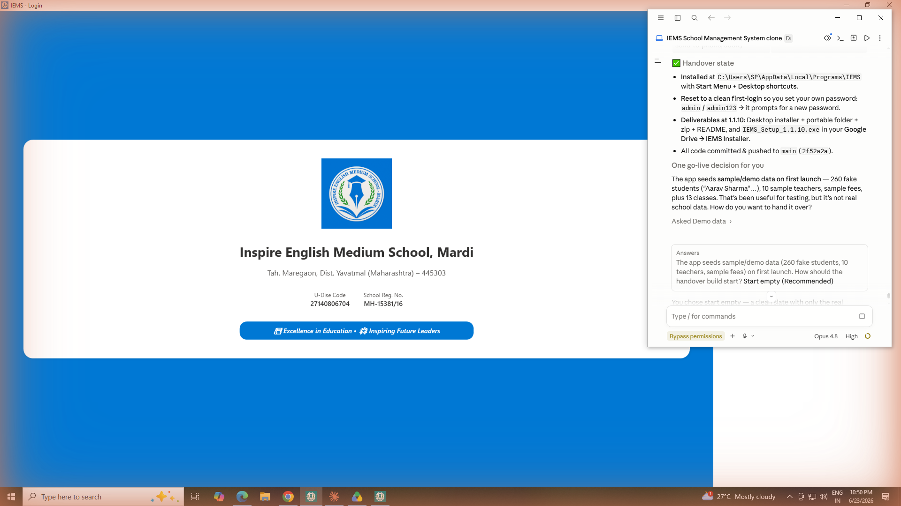
The login screen.
- Username — type admin (all lowercase).
- Password — type admin123 the very first time.
- Sign In — click to log in.
Step — set your own password: the first time you log in, the app asks you to
create a new password. It must be at least 8 characters and include a CAPITAL letter, a small letter,
a number and a special character — for example Mardi@2026. Write it down and keep it safe:
there is no online "forgot password".
Important: keep your password private. Anyone with it can see and change all
school data. You can change it later or add more users from User Management.
1.2 The main dashboard
After logging in you reach the dashboard — your home screen. Every part of the app is opened from a card here.
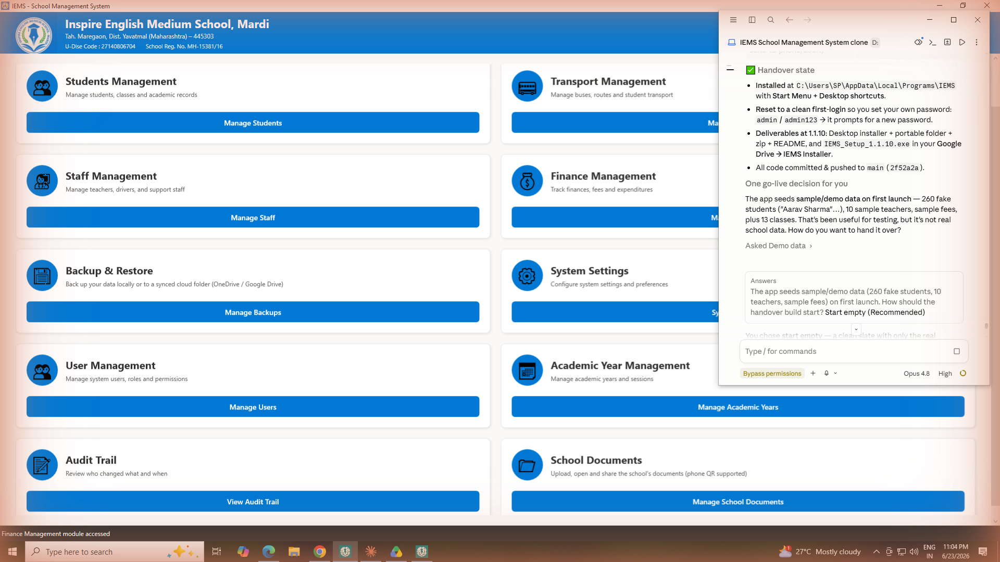
The dashboard — one card per module. Click the blue button on a card to open it.
- Students Management — students, classes, fees, ID cards, certificates.
- Transport Management — buses, routes and transport expenses.
- Staff Management — teachers, support staff, ID cards and payslips.
- Finance Management — electricity bills, other expenses and analytics.
- Backup & Restore — save and recover your data (local or Google Drive).
- System Settings — school name, contact details and preferences.
- User Management — add staff log-ins (Admin only).
- Academic Year Management — set up school years/sessions.
- Audit Trail — see who changed what and when (Admin only).
- School Documents — store the school's own papers (affiliation, circulars…).
You may see fewer cards. The dashboard shows only the sections your role is allowed
to use (see Part 4). An Administrator sees all of them; a Clerk, for example, sees only Students,
Transport and School Documents.
Tip: the top bar always shows your school name and details, and a Logout
button on the right. To leave any module and come back here, click ← Back.
Part 2 — Everyday tasks, step by step
This part follows a real example from start to finish: add a student, take their fee,
print the receipt, make an ID card and a certificate.
2.1 Add a new student
From the dashboard click Manage Students. The Students module opens on its Dashboard tab,
which shows totals at a glance.
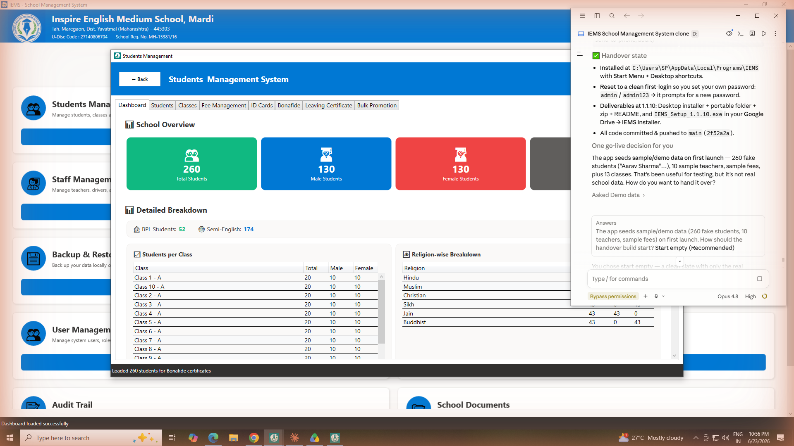
Students module — the Dashboard tab (overview of totals, classes and breakdowns).
- Tabs — Dashboard, Students, Classes, Fee Management, ID Cards, Bonafide, Leaving Certificate, Bulk Promotion.
- School Overview cards — total students, boys, girls and classes.
- Detailed Breakdown — students per class and a religion-wise split.
Now click the Students tab to see the list of all students and the action buttons.
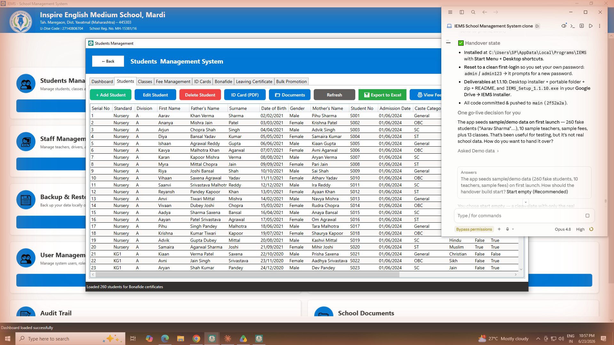
The Students tab — the full student list with all actions on top.
- + Add Student — open a blank form to add a new student.
- Edit Student — change the selected student's details.
- Delete Student — remove the selected student.
- ID Card (PDF) — make an ID card for the selected student.
- Documents — store scans (Aadhaar, birth certificate…) for the selected student.
- Export to Excel — save the whole list as an Excel file.
- View Fees — see the selected student's fee history.
- Class filter / row list — narrow the list to one class; click a row to select a student.
Step 1: click + Add Student. The form below opens.
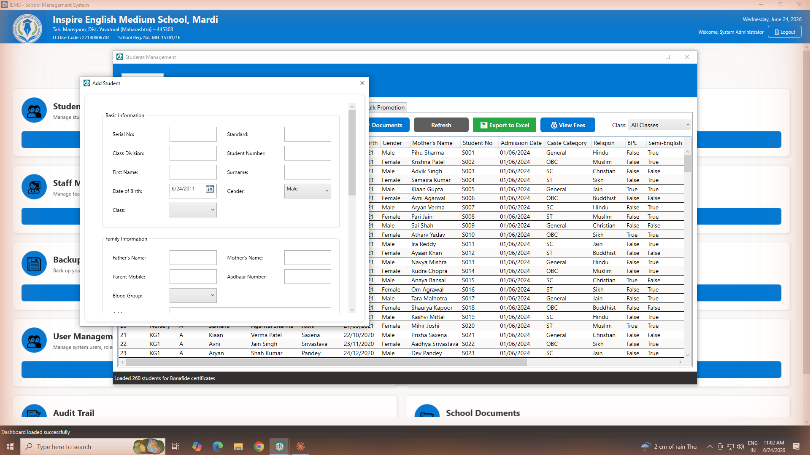
The Add Student form.
- Basic Information — Serial No, Standard, Class Division, Student Number, First Name, Surname, Date of Birth, Gender and Class.
- Family Information — Father's Name, Mother's Name, Parent Mobile, Aadhaar Number and Blood Group.
- Scroll down for address and other details, then Save.
Step 2: fill the boxes (at least the required ones), pick the Class from the drop-down, then click Save. The new student appears in the list immediately.
Tip: to change a student later, click their row once to select it, then click Edit Student.
2.2 Record a fee payment & print the receipt
In the Students module, open the Fee Management tab.
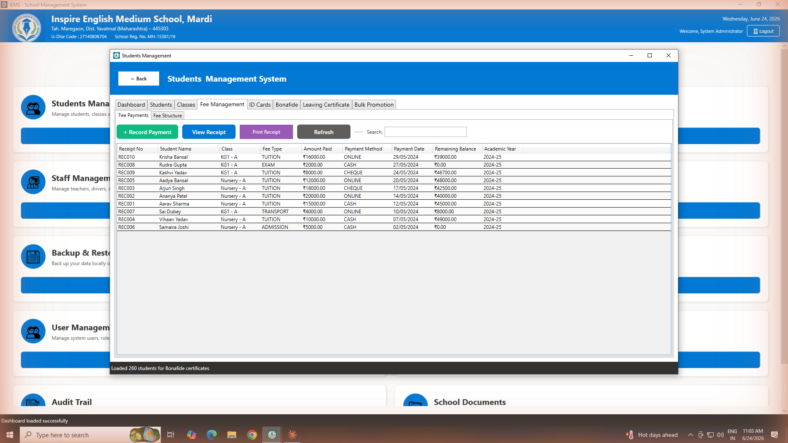
Fee Management — the Fee Payments tab.
- Fee Payments / Fee Structure — switch between recording payments and setting up fee amounts per class.
- + Record Payment — enter a new fee payment for a student.
- View Receipt — open the receipt for the selected payment.
- Print Receipt — send the selected receipt straight to a printer.
- Search — find a payment by student or receipt number.
- Payments list — receipt no, student, class, fee type, amount, method, date and remaining balance.
Step 1: click + Record Payment, choose the student, fee type and amount, the payment method (Cash / Cheque / Online), then Save.
Step 2: select the new payment and click View Receipt. A printable receipt opens with three buttons:
Print (to a printer), Export PDF (save as a PDF file), and Send to Phone (show a QR code — see 2.5).
Before you can record fees for a class, set the fee amounts once under the
Fee Structure tab (for each class / fee type / academic year).
2.3 Make a student ID card
Open the ID Cards tab in the Students module.
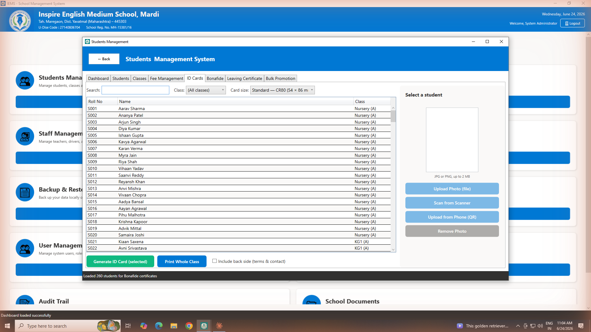
The ID Cards tab — search a student, add a photo, choose a size and print.
- Search / Class — find the student(s) you want.
- Card size — Standard CR80 is the default; you can also pick a custom size.
- Student list — tick the student(s); use Ctrl/Shift-click to pick several.
- Photo panel (right) — add the student's photo from a file, a scanner, or a phone (QR), or remove it.
- Generate ID Card / Print Whole Class — make one card, the selected ones, or a whole class on an A4 sheet. Tick Include back side for terms & contact on the back.
Step: click a student → on the right click Upload Photo (file) (or Scan / phone QR) → choose the card size → click Generate ID Card (selected). Save the PDF and print it.
2.4 Bonafide & Leaving certificates
The Bonafide tab makes a bonafide certificate for any student.
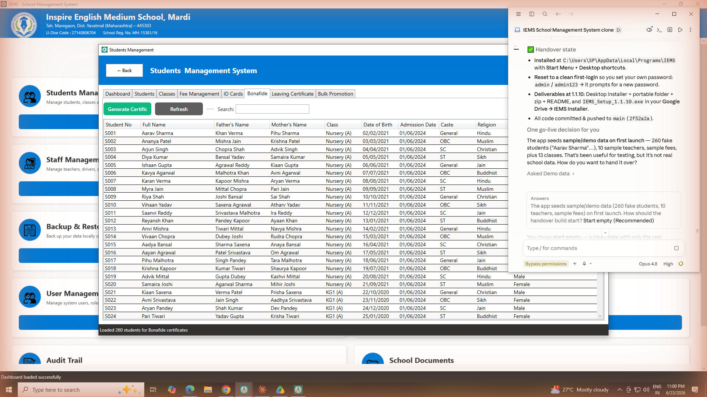
The Bonafide tab.
- Generate Certificate — select a student in the list, then click to create the certificate.
- Search — find a student by name, number or class.
- Student list — click the row of the student you want.
The Leaving Certificate tab produces a school leaving certificate with a live preview.
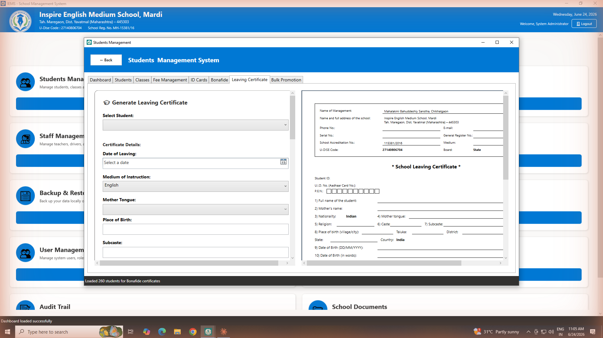
The Leaving Certificate tab — fill the form on the left; the certificate preview is on the right.
- Select Student — the form fills automatically from their record.
- Certificate Details — Date of Leaving, Reason, Conduct, Last Class, etc.
- Buttons — Generate Certificate (build the preview), Print Certificate, Export to PDF, and Send to Phone (QR).
2.5 Send any document to a phone (QR)
Every document the app makes — ID card, bonafide, fee receipt, leaving certificate — and every stored
document has a Send to Phone (QR) button. Click it and a QR code appears.
Step: click Send to Phone → a QR code shows on the PC → on a phone that is on the
same Wi-Fi, open the camera and point it at the QR code → tap the link → the document opens on the phone, where it can be saved or shared.
Tip: nothing is uploaded to the internet — the file goes straight from the PC to the
phone over your local Wi-Fi. The first time, Windows may ask to "Allow" IEMS through the firewall — click Allow.
Part 3 — Every module explained
3.1 Staff & Teachers
From the dashboard click Manage Staff.
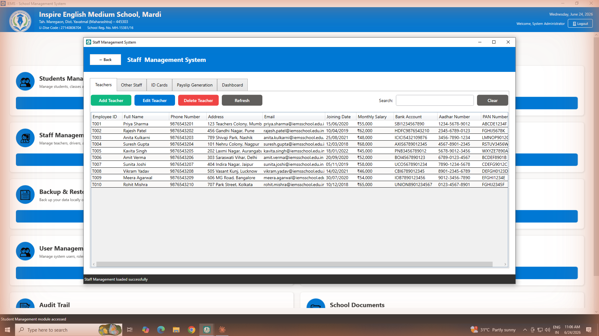
Staff Management — the Teachers tab.
- Tabs — Teachers, Other Staff, ID Cards, Payslip Generation, Dashboard.
- Add / Edit / Delete Teacher — manage teacher records.
- Search / Clear — find a person quickly.
- List — Employee ID, name, phone, address, salary, bank/Aadhaar/PAN.
The ID Cards tab makes ID cards for teachers and staff, just like students.
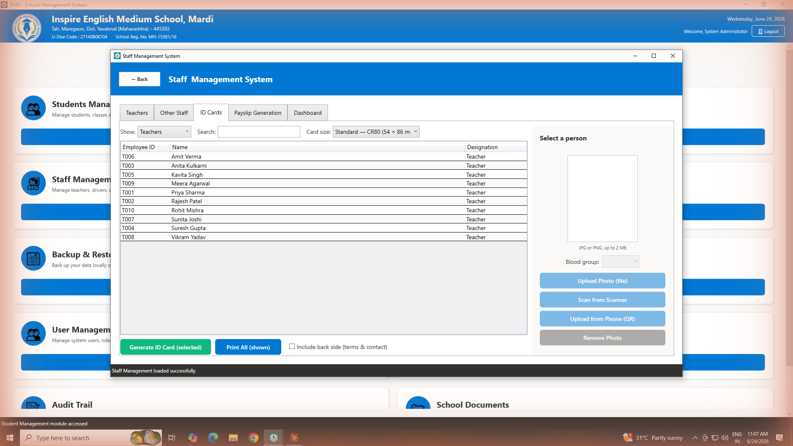
Staff ID Cards — choose Teachers or Other Staff, add a photo and blood group, then generate.
- Show — pick Teachers or Other Staff.
- List — Employee ID, Name and Designation (teachers show "Teacher"; staff show their position).
- Photo + Blood group (right) — add a photo (file / scanner / phone) and choose a blood group.
- Generate — make one card, the selected ones, or everyone shown.
Payslips: the Payslip Generation tab creates a monthly salary slip for any teacher or staff member.
3.2 Finance Management
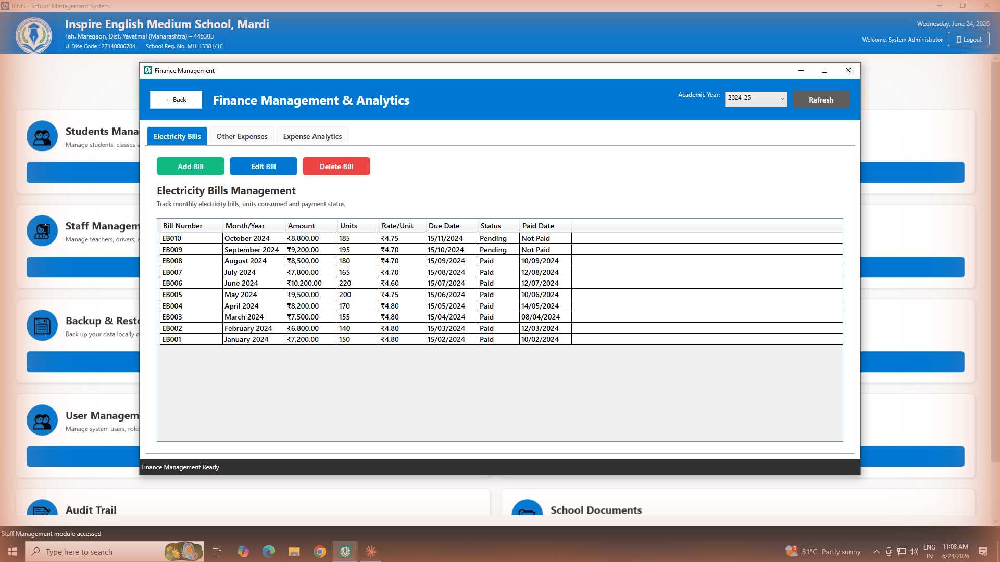
Finance Management & Analytics — Electricity Bills tab.
- Tabs — Electricity Bills, Other Expenses, Expense Analytics.
- Academic Year — switch the year you are viewing.
- Add / Edit / Delete Bill — record monthly electricity bills (units, amount, due/paid status).
3.3 Transport Management
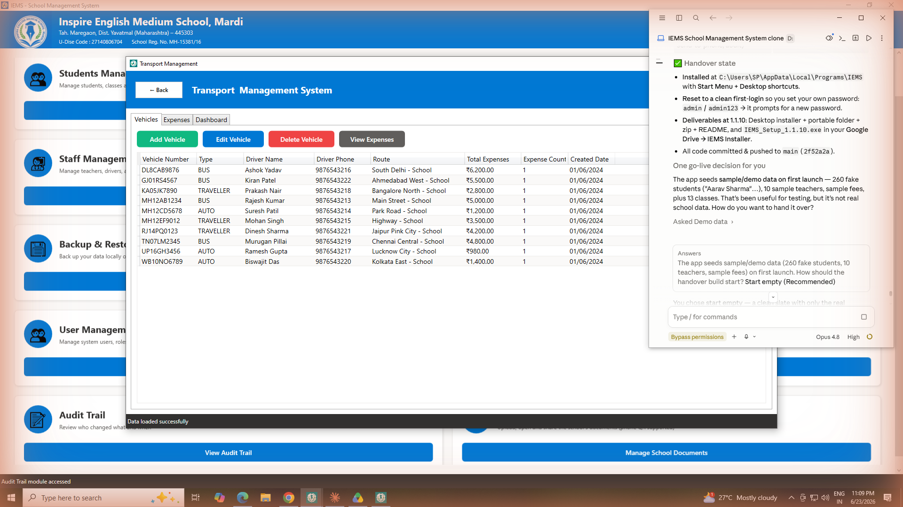
Transport Management — buses, routes and transport expenses.
Use this module to record the school's vehicles and their running expenses. Add, edit and delete entries with the buttons on each tab.
3.4 School Documents
From the dashboard click Manage School Documents. This is a safe place for the school's own papers
(affiliation/recognition, U-DISE, circulars, government letters, audit reports…).
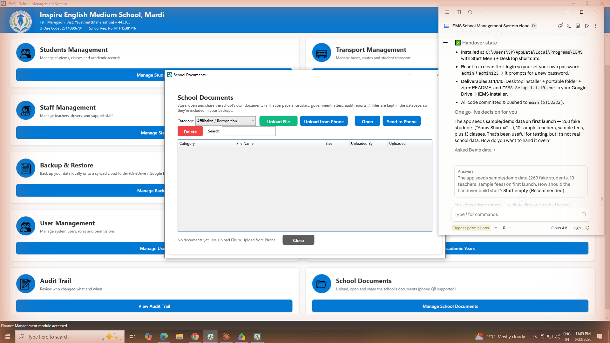
School Documents window.
- Category — choose the type of document before uploading.
- Upload File — add a document (image or PDF) from this PC.
- Upload from Phone — show a QR code; a phone on the same Wi-Fi uploads a photo/scan.
- Open — view the selected document.
- Send to Phone — show a QR code to open the document on a phone.
- Delete / Search — remove a document, or filter the list by name/category.
Good to know: documents are stored inside the database, so they are included automatically in every backup.
3.5 Backup & Restore (with Google Drive)
From the dashboard click Manage Backups. This is the most important screen for keeping your data safe.

Backup & Restore — Manual Backup tab.
- Backup to Desktop — save a backup file onto this PC's Desktop.
- Backup to Custom Location — save a backup to any folder (e.g. a USB drive).
- Set up Google Drive backup — one click: saves backups into your Google Drive folder and turns on a daily auto-backup (needs Google Drive for Desktop installed and signed in).
- Restore from Google Drive — one click: brings back the latest backup from Google Drive (ideal on a new PC).
- Other tabs — Restore (from a file), Automatic Backup (daily/weekly schedule) and Backup History.
Recommended one-time setup: install Google Drive for Desktop and sign in with the
school's Gmail → in IEMS click Set up Google Drive backup. From then on, a backup is made daily and uploaded to the cloud automatically.
Restoring replaces all current data with the backup. IEMS always makes a safety copy of the
current data first, then restarts. On a brand-new PC, install IEMS, sign into Google Drive, then click Restore from Google Drive.
3.6 System Settings
From the dashboard click System Settings. Here you change the school's own details and preferences.
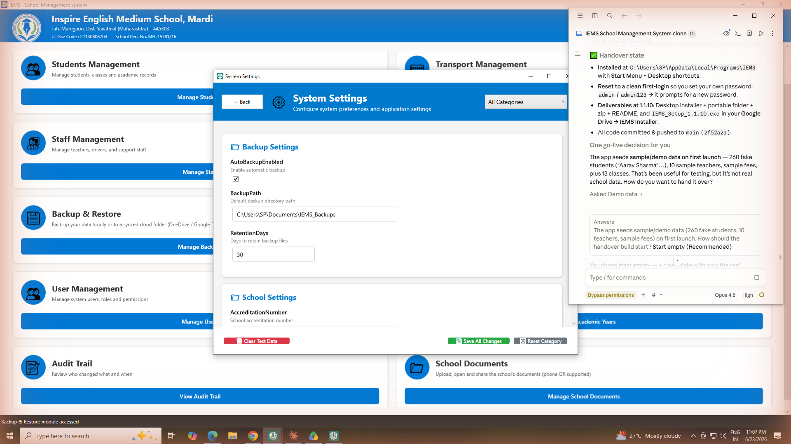
System Settings.
- All Categories — filter settings by group (Backup, School…).
- Backup Settings — turn auto-backup on/off, set the backup folder and how many days to keep backups.
- School Settings — school name, address, U-DISE code, accreditation number, phone and email.
- Save All Changes — apply your edits. Reset Category restores defaults for a group.
Your school email and phone printed on receipts and ID cards come from here — edit them any time.
3.7 Audit Trail & Users
The Audit Trail (Admin only) records every change made in the app.
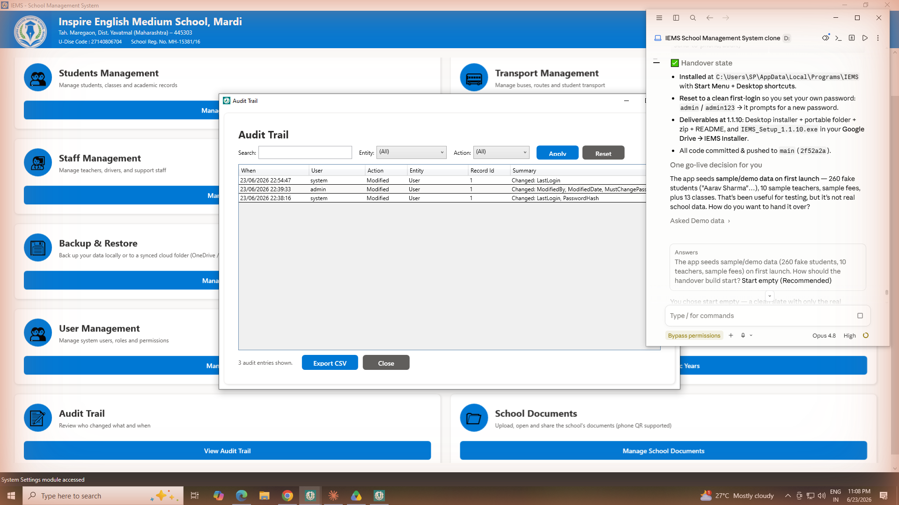
Audit Trail — who changed what and when.
- Search / Entity / Action filters — narrow the log, then click Apply.
- Log — date/time, user, action, what was changed and a short summary.
- Export CSV — save the log to a spreadsheet.
User Management (dashboard → Manage Users, Admin only) lets you add more log-ins for office staff,
each with their own password, and remove them when no longer needed. Academic Year Management lets you
add and switch school years/sessions.
Part 4 — Users, roles & security
4.1 User accounts & what each role can do
Each person who uses IEMS has their own username and password. Every account is given a role
that decides which parts of the app they can open. The dashboard automatically shows only the cards a
person's role is allowed to use — everything else is hidden.
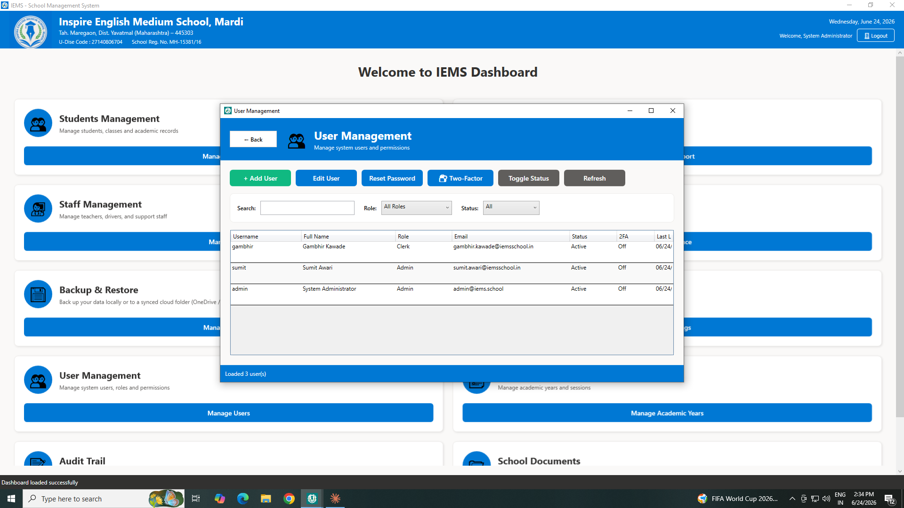
User Management — add staff log-ins, set each person's role, reset passwords and turn on two-factor security.
| Admin | Full access to everything, including User Management, Backup & Restore, System Settings and the Audit Trail. |
| Principal | Everything except the system-administration tools (Users, Backups, System Settings). |
| Accountant | Finance, Transport and School Documents. |
| Clerk | Students (admissions, fee collection, certificates, ID cards, classes), Transport and School Documents. Does not see staff salaries, Finance or any admin tools. |
| Teacher | Students and School Documents. |
Why this matters: a Clerk signing in will not even see Finance, staff salaries,
Backups or Settings — those cards simply don't appear. Sensitive areas stay limited to the people who need them.
4.2 Adding and managing users
Open User Management from the dashboard (Admin only).
Add a user: click + Add User, fill in the full name, a username, an email and a
starting password, choose the Role, then Save.
Reset a password: select the person, click Reset Password and type a new one.
They are asked to set their own private password the next time they log in.
Turn an account off: select the person and click Toggle Status to disable
(or re-enable) the account without deleting it.
Tip: give every staff member their own account instead of sharing one — the
Audit Trail then shows exactly who made each change.
4.3 Two-factor authentication (extra login security)
Two-factor authentication (2FA) adds a second check at login: after the password the app asks for a
6-digit code from a free authenticator app on your phone (Google Authenticator, Microsoft Authenticator
or Authy). Even if someone learns your password, they cannot get in without your phone. It is optional
and set up per person.
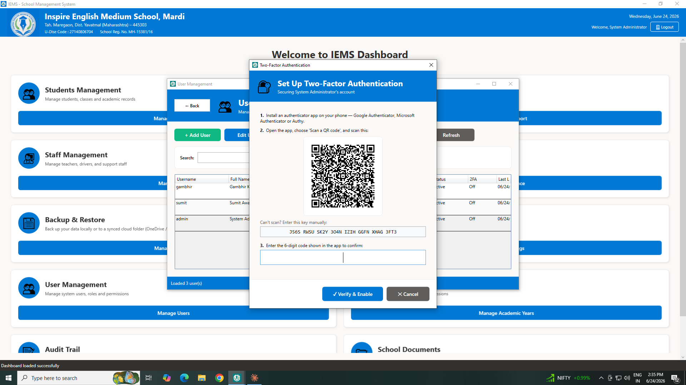
Setting up two-factor — scan the QR code once with your phone's authenticator app, then confirm the 6-digit code.
Turn it on: User Management → select your own account → 🔐 Two-Factor →
scan the QR code with the app → type the 6-digit code it shows → Verify & Enable.
Save your backup codes: the app then shows 10 one-time backup codes. Print or
write them down and keep them private — each one lets you sign in once if you ever lose your phone.
Locked out? An administrator can switch two-factor off for any user from the same
screen (select the user → Two-Factor → Turn off), so nobody is ever permanently locked out.
4.4 Changing or resetting your password
If you know your password: on the login screen click Reset Password?
(to the right of the password box), then enter your username, your current password and a new one.
If you forgot it: ask an administrator to reset it for you from User Management.
You then set a new private password on your next login. There is no online "forgot password".
Part 5 — Keeping your data safe
| Where is my data? | In a file named school.db next to the program. All students, fees, staff, documents and settings live there. |
| Daily safety | Set up Google Drive backup once (Backup & Restore → Set up Google Drive backup). A backup is then made daily and uploaded to the cloud automatically. |
| Manual backup | Any time, click Backup to Desktop or Backup to Custom Location (e.g. a USB drive) and keep the file safe. |
| Reinstalling / updating | Installing a newer version never deletes your data — and a safety copy is made before every install. Your students and fees stay exactly as they were. |
| Moving to a new PC | Install IEMS, sign into Google Drive for Desktop, then click Restore from Google Drive. (Or copy the school.db file across, or restore a backup file.) |
| Forgot password? | There is no online reset. Keep your password safe. An Admin can reset another user's password from User Management. |
Three simple habits keep you safe:
1) keep Google Drive backup switched on; 2) take a manual backup to a USB drive before big changes;
3) never share your password.
Need help?
Contact the Administrator — Suraj Bothale, phone +91 6361986696.
School email: inspiremardi@gmail.com